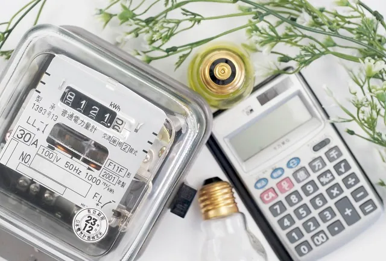
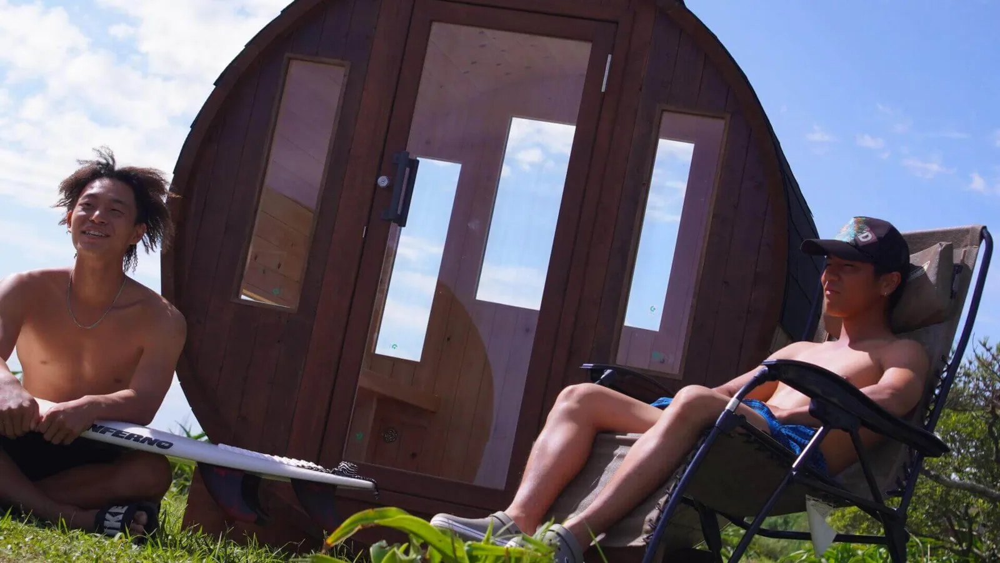

バレルサウナの購入時には、維持費・電気代を考慮する必要があります。電気ヒーター（電気ストーブ）の消費電力、薪ストーブやガスストーブの燃料費や定期的なメンテナンスにも費用がかかります。サウナの断熱性を高める工夫や割安な時間帯の利用により、バレルサウナの電気代を抑えることが可能です。
バレルサウナの維持費・電気代の実情

サウナの熱源と特徴
サウナの熱源は、電気ヒーター・薪ストーブ・ガスストーブの3種類があり、特徴も異なります。
電気ストーブは、コンパクト、かつ、ボタンひとつで操作できる手軽さやメンテナンスのしやすさがあります。ロウリュウも楽しめるタイプが多いです。
薪ストーブは、電気には出せない圧倒的な火力で、サウナ室の温度を高めることができます。また、炎を見ながら汗をかくことは心身ともに特別な時間を楽しめます。
ガスストーブは、電気よりも出力を出し、薪よりもメンテナンスが容易な、いいとこ取りです。都市ガスやプロパンガスに連結でき、温度制御もパネルで操作可能です。
サウナの維持費の内訳
バレルサウナの維持費は主に電気代や、薪代やガス代などの燃料費、そして定期的なメンテナンス費用に分けられます。
電気ヒーター（電気ストーブ）でのランニングコスト
電気ストーブを利用する場合、電気代はサウナの使用頻度や設定温度に大きく左右されます。概算シミュレーションをするには、以下の計算式によって消費電力を計算することが可能です。
電力量（Wh）＝消費電力（W）×時間（h）
kWh＝電力量（Wh）÷1000
電気料金（円）=kWh×1kWh単価（円）
電気ヒーターの電気代は、1時間あたり、150円程と言われています。
例えば、1日に2～3時間利用すると仮定した場合（60－90時間）の電気代は約9,000～13,500円／月です。
(※使用場所の電力会社により電気の契約、単価が異なります。)
電気ヒーターの耐久年数の目安
電気ヒーターの耐久年数の目安は、使用頻度やメーカーによって異なりますが、一般的には約5年程度でヒーターのエレメントを交換する必要がございます。
薪ストーブでのランニングコスト
サウナルームのサイズによりますが、1回のサウナセッションでの消費量は、約5kgから15kg程になることがあります。
仮に、一束（7kg）と仮定した場合のコストは、700～800円となります。
1日3時間利用すると仮定した場合（90時間）の薪代は、50,000円となります。
ガスストーブでのランニングコスト
実は、バレルサウナ用の都市ガスやプロパンガス（LPG）の熱源もあります。
もちろんロウリュも可能なタイプです。
ガスの場合も1時間あたり、150円程のガス代がかかります。
電気と同様に、1日2～3時間利用すると仮定した場合（60－90時間）のガス代は約9,000～13,500円／月です。
ガスは、電気よりも高い温度が出せ、薪よりもメンテナンスが容易な、いいとこ取りの熱源です。
熱源に与える要因
電気・薪・ガスともに、その消費量は、以下の要因によって異なります。
- サウナの体積とガラス面積
- 燃料の種類と含水率
- ストーブの燃焼効率
- 外気温などの外部環境
施設利用とのコスト比較
サウナを導入する際、維持費は避けて通れません。
しかし、これをサウナ施設の利用費用と比較すると、長期的に見た場合に自宅サウナのほうがコストパフォーマンスに優れている可能性があります。具体的には、サウナ施設に定期的に通う場合、月額利用料金や交通費などが発生します。
また、多人数の共有空間で体験するサウナと、自宅のプライベート空間で自分のペースでロウリュをかけ、周りを気にすることなく味わえるサウナ体験は別物です。
一人で楽しむも、家族や友人、恋人とその贅沢な空間を楽しむのもあなた次第。
エネルギー効率の高いストーブの利用や断熱性が高い、高品質なバレルサウナで電気代を抑える工夫により、ランニングコストを抑えることも可能です。頻繁にサウナを利用する方は、長期的な視点で考えるとバレルサウナを導入する価値があるといえるでしょう。
電気代を抑えてサウナを楽しむコツ

自宅サウナの電気代を抑えるためには、いくつかのコツがあります。
バレルサウナの断熱性を高める
バレルサウナの電気代を抑えるためには、まずサウナの断熱性を高めることが重要です。サウナ使用中はできるだけ窓やドアをしっかりと閉じ、熱が逃げないようにすることが大切です。窓やドアの隙間をしっかりと密閉し、断熱材を追加するなど、熱損失を最小限に抑える工夫によりサウナの余熱時間が短縮され、電気代の節約につながります。サウナ室内の温度を一定に保ち、無駄な電力消費を抑えることが電気代を抑えるコツです。
サウナの時間帯や使用頻度を考える
バレルサウナを賢く利用するうえで、利用する時間帯を考慮することが大切です。電力会社によっては、夜間など一部の時間帯において電気代が安く設定されている場合があります。このような割引時間帯を活用してサウナを利用することで、電気代を節約することが可能です。
バレルサウナを複数人で利用する
家族や友人と一緒にサウナを使うと、電気代を節約できるうえに、楽しい時間を共有できます。サウナを温めるのに必要な電力を複数人で分け合えば、一人あたりのコストが減ります。さらに、一緒にバレルサウナを利用することで、家族や友人との絆を深める良い機会にもなります。このような使い方は、バレルサウナの魅力を最大限に活かす方法の一つです。
Rink SAUNAでは、電気・薪の他にも、サウナ施設で使われるガスストーブをバレルサウナ仕様に改良したバレルサウナ用ガスストーブも取り扱っています。
高品質な国産ヒノキ材を使用したバレルサウナで、「ワクワクと感動」をご提供します。バレルサウナの詳しい仕様や設置方法が知りたい方は、お気軽にお問い合わせください。